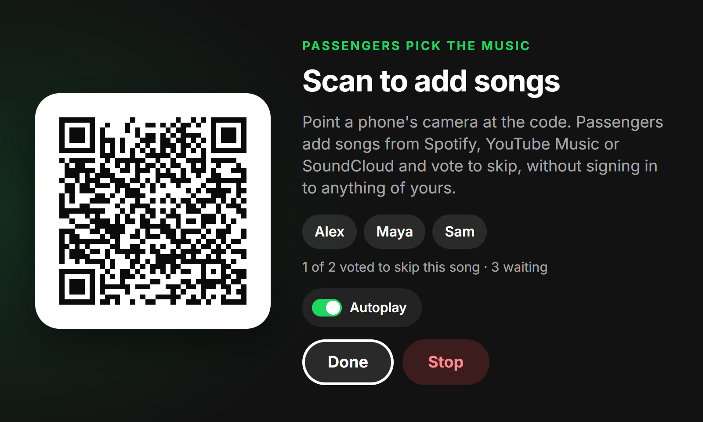
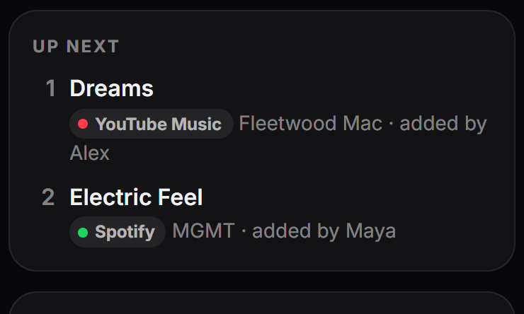
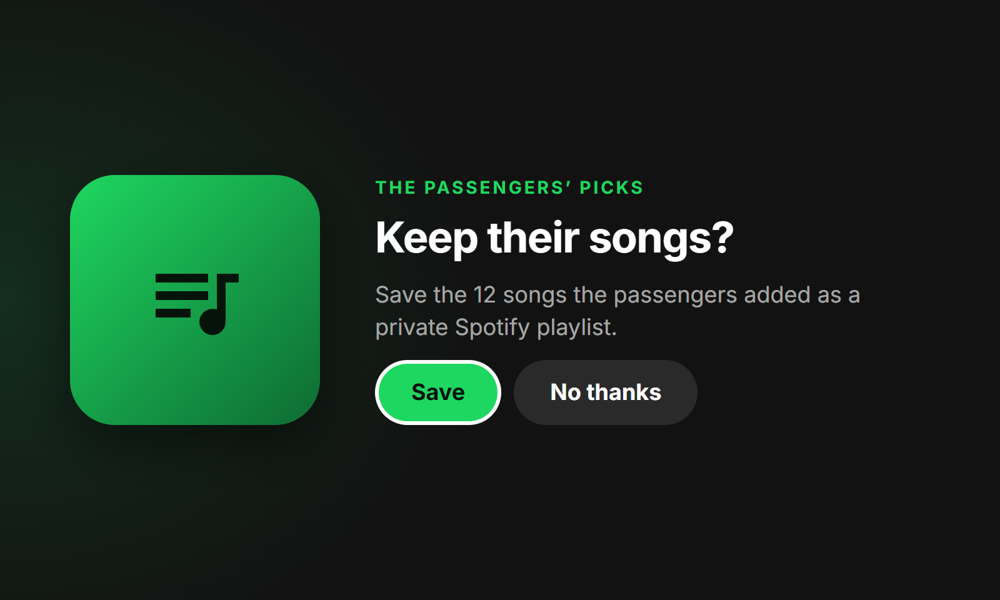
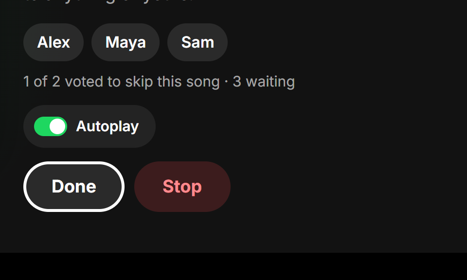

What's new · October 17, 2026
Wisp 1.0.1
Hand the music to the back seat: passengers scan a code and add songs from Spotify, YouTube Music or SoundCloud, vote to skip, and the songs they chose can stay with you as a playlist.

PassengersPassengers pick the music
Open it from the player's menu or say "Okay Wisp, let the passengers pick". Everyone scans the code with their phone's camera, adds songs to Up next and votes to skip. No apps, and nobody signs in to anything of yours.
How it works ›

Any serviceSpotify, YouTube Music or SoundCloud
Passengers search every service you're signed in to, all at once or one at a time. Every song says where it plays, and Up next shows who added what. Wisp plays each in its own app as the one before it ends, then Spotify picks up where it was.
See the passenger page ›

Keep themTheir songs, as a playlist
When the session ends, the Car Thing asks whether to keep everything they added as a private Spotify playlist, like "Car jam · Oct 17". YouTube Music and SoundCloud picks are found on Spotify too.
More ›

AutoplayAutoplay that follows them
When Spotify runs out of songs, it normally picks its own. With Autoplay on, it plays more like the songs the passengers chose instead. One switch on the QR screen.
More ›
Also in 1.0.1
- Clearer messages. A failed update says why in plain words (no internet, a damaged download, not enough room) on the Car Thing and in the Wisp app.
- "Nothing playing" tells you what to do next.
- Directions say when there's nothing close by, or when the map service can't be reached.
- When a button doesn't work, the note says which: "Couldn't skip ahead", "Spotify didn't respond".
Every update ›